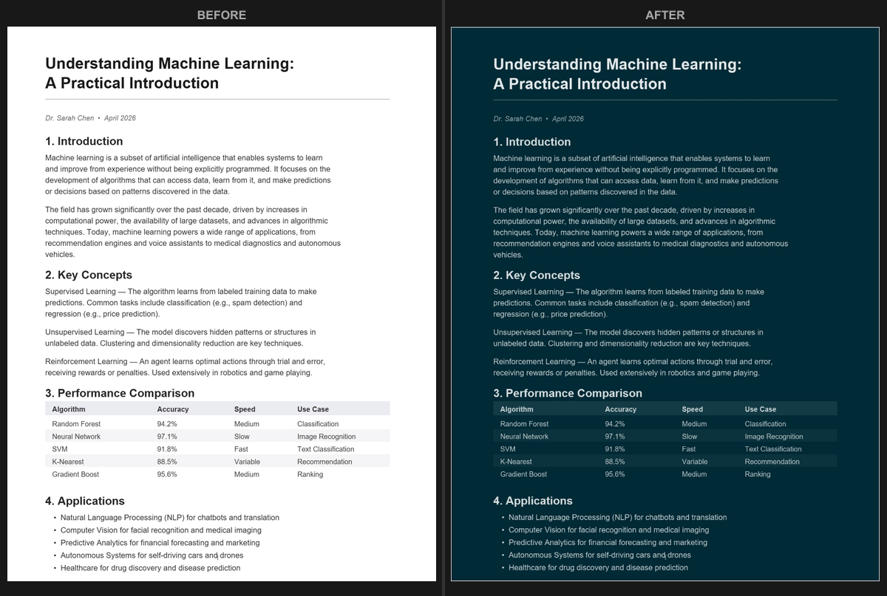

Convert PDF to Dark Mode Online: Free, Private & Instant
Quick answer: open the PDF Dark Mode Converter, drop your PDF on the page, pick a theme, and the dark version downloads in seconds. It runs entirely in your browser - nothing is uploaded - and the converted file keeps its text selectable and searchable. Free, no sign-up.
Bright white PDF pages are hard on the eyes, especially during long reading sessions or at night. The good news: you can turn any PDF into a proper dark-themed document right in your browser, for free, without sending your file to a server. I built this converter because every "online" option I tried either uploaded my documents, gave me three ugly themes, or flattened the pages into images that broke search. This guide covers how it works, how to get the best output, and how a real dark-mode conversion differs from the quick tricks people usually try first.

How to convert a PDF to dark mode
- Open the PDF Dark Mode Converter in any browser.
- Drop your PDF onto the page, or click to choose a file.
- Pick a theme from the dropdown (or a custom color).
- The converted PDF downloads automatically - usually within a few seconds.
There is nothing to install and no account to create. The conversion runs on your device using your browser and GPU, so the file stays private and large documents still finish fast.
Pick from 16+ themes
Most online dark-mode tools give you three or four options. This one includes over 16 carefully tuned themes so you can match your reader and your eyes:
- Dracula, Nord, Solarized, Monokai, Tokyo Night and other popular developer palettes
- Classic Inversion for a plain black background
- Sepia, Forest Green, Midnight Blue for softer, low-contrast looks
- A Custom option where you enter any hex color, dark or tinted-light

Dark mode vs. inverting colors
The fastest "dark mode" trick is to invert colors with a browser flag or an OS accessibility setting. It is worth understanding why that usually disappoints. Inversion is pure math - it subtracts every color channel from 255, so white becomes black and, unavoidably, every other color flips too. A blue chart turns orange, skin tones go alien, and brand logos become unrecognizable.
A real dark-mode conversion is deliberate instead of mechanical: it darkens backgrounds, lightens text to keep strong contrast, and can preserve photos rather than negate them. The result looks designed-for-dark, not run through a photo-negative filter.

If you specifically need a true negative - for example to invert a PDF's colors for printing dark slides on white paper - that is a different job with its own tool.
Selectable text is preserved
This is the detail most converters get wrong. Many tools "rasterize" your PDF - they turn each page into a flat image and wrap it back up. The page looks dark, but it is now a photograph of text: no copy, no Ctrl+F, no screen-reader support. This converter keeps a hidden text layer perfectly aligned under each darkened page, so selection, search, and accessibility all keep working. There is a deeper explanation in selectable text in dark mode PDFs.

Adjust quality and resolution
Open Advanced Settings for two sliders:
- Resolution (0.5x to 4x): higher is sharper, lower keeps the file smaller. For a textbook with fine print, 4x gives crisp pages.
- JPEG quality (50% to 100%): controls per-page compression.
You can also toggle image preservation, which detects photos and keeps their original colors instead of darkening them - exactly the thing inversion can't do.

Reading PDFs at night
If your goal is comfortable late-night reading, a dark PDF is the biggest single improvement - but pair it with your system's night mode for the best result. The eye strain at night comes less from text contrast and more from a bright page glaring against a dark room: your pupils open up in dim light, then a white page floods them. Two steps fix it:
- Turn on OS night mode to cut blue light - Windows Night Light, macOS Night Shift, iOS Night Shift, or Android Night Light / Eye Comfort Shield.
- Convert the PDF to a warm dark theme. "Warm Dark" and "Sepia" use soft, low-contrast colors that are easiest on tired eyes.

Why not just use a browser extension?
Dark-mode extensions are built for web pages and struggle with PDFs, which render on a canvas the extension can't restyle reliably - so some pages look fine and others break. A converter applies the color transform to each page and produces a standard PDF that looks identical everywhere you open it. For browser-specific notes, see PDF dark mode in your browser; for phones, tablets, and apps, see PDF dark mode on any device.
Ready? Open the PDF Dark Mode Converter and convert your first PDF in seconds. Free, private, no sign-up.
Frequently Asked Questions
Entirely on your device. The converter runs in your browser using your GPU; your PDF is never uploaded. You can even go offline after the page loads and it still works.
Yes. No account, no watermark, no page limit, and no file-size cap. It is free and open-source.
Yes. The converter keeps a hidden text layer aligned under each darkened page, so copy, search, and screen readers keep working - unlike tools that flatten pages to images.
Inversion flips every pixel to its opposite, which makes photos and charts look like negatives. Dark mode applies an intelligent transform that darkens backgrounds and lightens text while keeping images and colored elements natural.
Yes. Choose from 16+ themes or a custom hex color, and adjust resolution (0.5x-4x) and JPEG quality in Advanced Settings.